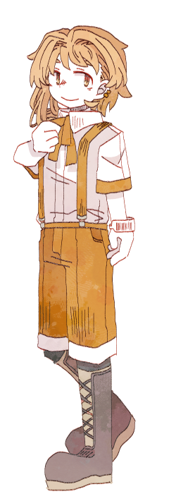

↓↓↓

「あなたと一緒なんだね。よろしく、お願いします」
ミケの兎
【目標】自分以外を最多投票者にしない
【禁忌】誰かを傷付ける
あなたは兎だ。誠実でやさしく、そして何も持たない。
犬の過去を聞いていた。猫の幸福を聞いていた。鼠の悲鳴を聞いていた。
そして、主人の愛を、知っていた。
何もなくても、何も差し出せなくても、あなたは善き人でありたい。
主人を助けるためなら。誰かが傷付かないためなら。
あなたは自らの身を焼くことすら厭わない。
【開示条件】
①考えている「犯人」について
条件：ソルティドッグとジンジャーキャット両名がいない、かつ、必ずバターマウスがいるとき
②ソルティドッグの経歴について
条件：ソルティドッグ本人の言及もしくは承諾があるとき
③Dr.シュガードに思っていることについて
条件：Dr.シュガードと二人きりのとき
④セクションキーについて
条件：
Dr.シュガード／２人きりで密談できるとき
それ以外／相手のセクションキーと交換できるとき
【基本情報】
あなたは、「Dr.シュガードを蘇生してしまったのはバターマウスだ」と思っている。
状況的には誰がやっていてもおかしくはない。
けれど、バターマウスは「思い出そのものの追体験ができるアルバム」を作ろうとするほど思い出に固執している。
時折、研究セクション１でDr.シュガードの白衣を抱きしめて泣くところも見た。
だからこのようなことをしでかしてもおかしくはない、とあなたは感じている。
行為の是非はともかく、バターマウスもあなたにとって大切な弟妹のひとりだ。
犯罪だからと冷たく突き放していいはずがない。
やってしまったのが、自分たちが「親と慕う人の蘇生」であれば、なおさら。
あなたはなんとかこの場をごまかし、あるいは自分が犯人として名乗りを上げることで、家族を守ろうと思っている。
【人間関係】
Dr.シュガード／呼び方：ドクター
「……親、かな」
「破天荒で、人間性・社会性の類が軒並みだめなひとだった」
「でも、自分たちを愛してくれてたよ」
ソルティドッグ／呼び方：ドッグ
「年上の弟、みたいな……？」
「死にかけてた軍人さん。ドクターが助けたんだ」
「自分も大人に見てほしくて、……ピアス開けちゃった」
ジンジャーキャット／呼び方：キャット
「元気でいい子。自分のことも心配してくれてる」
「ドクターが亡くなってから、すねたりしなくなったね」
「無理して明るくしてくれてるんじゃないかな」
バターマウス／呼び方：マウス
「甘えん坊でさみしがり」
「ドクターのことずっと呼んで、泣いてた」
「自分が助けになれたらよかったのに、何もできなかった」
【所持コード】
個人ＩＤ：403
セクション１キー：DR（大文字のディー・大文字のアール）
連想語：honey